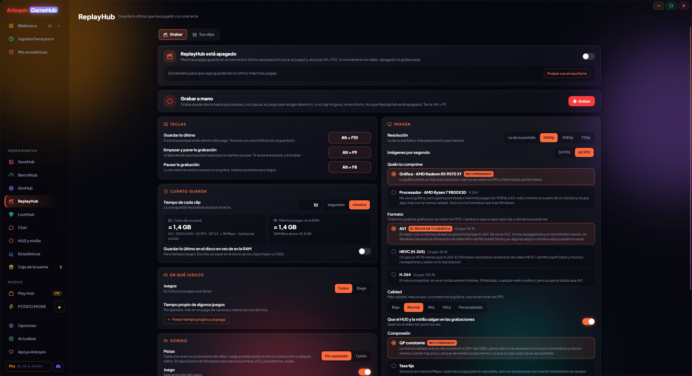

🎬
ReplayHub：保存你刚刚玩的内容 测试版
按一个键，就能把刚刚玩的最后一段保存成视频，就像 ShadowPlay 一样。
ReplayHub 会在后台录下你最近玩的内容，按下 Alt + F10（可以更改）就会保存成视频。它从游戏外部捕获屏幕，不向游戏注入任何东西（适用于反作弊游戏），并用你的显卡（AMD、NVIDIA 或 Intel）编码，几乎不占用处理器。
你可以选择保存多长时间、分辨率、30 或 60 FPS、画质和格式：AV1、HEVC 或 H.264（默认是你的显卡支持的最好格式），保存为 MKV 或 MP4。声音分开录制：游戏、Discord、麦克风和电脑的其他声音。如果保存时出了问题，已经写入的部分仍然可以播放。免费版：所有声音在一条音轨里，每个片段最长 2 分钟；ArlequinPro：每个来源一条音轨，时长不限。
使用方法
- 工具 → ReplayHub（测试版中），然后打开它。
- Alt + F10 保存片段，可用于所有游戏或只用于你选择的游戏。
- 片段保存在 视频\ReplayHub，每个游戏一个文件夹。
- 测试版中：免费版每段剪辑最长 5 分钟，「手动录制」移到标签旁，并且在独占键盘的游戏（如 Fallout New Vegas）中快捷键也能用。

✦ 其他功能